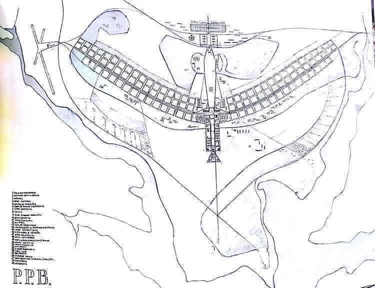

Linha do Tempo

1956 — Início das Obras
Com Juscelino Kubitschek na presidência, as obras da nova capital começaram em meio ao cerrado, com máquinas e trabalhadores vindos de todo o país.

1957 — Plano Piloto de Lúcio Costa
O projeto urbanístico de Lúcio Costa venceu o concurso público e definiu o formato de avião da nova cidade, com eixos bem definidos e áreas setorizadas.
1958 — Arquitetura de Niemeyer
Oscar Niemeyer começa a projetar os principais prédios da cidade, como o Congresso Nacional, a Catedral e o Palácio da Alvorada.
21 de Abril de 1960 — Inauguração
Brasília é oficialmente inaugurada como a nova capital do Brasil. Um marco na história e símbolo de desenvolvimento nacional.
1987 — Patrimônio da Humanidade
Reconhecida pela UNESCO como Patrimônio Cultural da Humanidade, Brasília se torna um ícone mundial de arquitetura moderna e urbanismo.